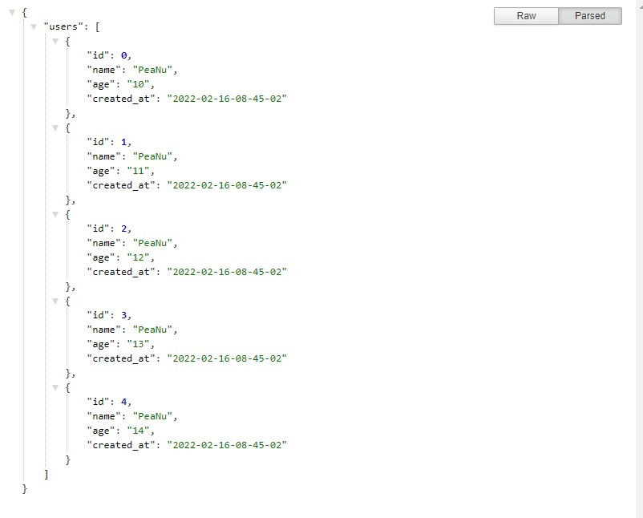
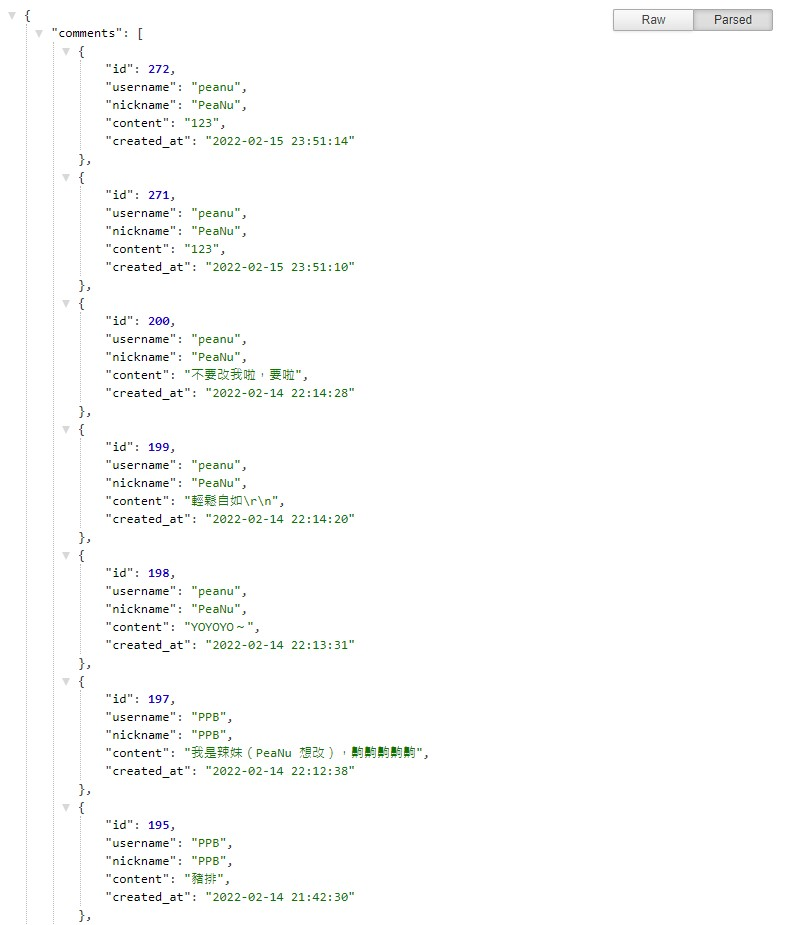

實際做之後才發現沒那麼複雜。
簡述
如果想要回傳一個 JSON 格式的資料，在 PHP 只要做兩件事就好：
- 用 array 建立好 JSON 格式的物件
- 用 PHP 的內建方法
json_encode 編碼成 JSON 資料
就是這麼簡單，附個範例：
1
2
3
4
5
6
7
8
9
10
11
12
13
14
15
16
17
18
|
header('Content-type: application/json; charset=utf-8');
$users = array();
for ($i=0; $i<5; $i++) {
array_push($users, array(
"id" => $i,
"name" => "PeaNu",
"age" => '1' . $i,
"created_at" => date('Y-m-d-H-i-s')
));
}
$json = array("users" => $users);
$response = json_encode($json);
echo $response;
|
結果長這樣：

延伸範例
如果你還記得留言版的話，會發現資料庫撈出來的資料只要先轉成 JSON，就可以當作是一支 API 了。
取得所有留言的 API：
1
2
3
4
5
6
7
8
9
10
11
12
13
14
15
16
17
18
19
20
21
22
23
24
25
26
27
28
29
30
31
32
33
34
35
36
37
38
39
40
41
42
43
44
45
46
47
48
49
50
51
| <?php
require_once('./conn.php');
$limit = 10;
$offset = 0;
if (!empty($_GET['limit'])) {
$limit = intval($_GET['limit']);
}
if (!empty($_GET['offset'])) {
$offset = intval($_GET['offset']);
}
$sql =
"SELECT users.username, users.nickname, comments.content, comments.created_at, comments.id, comments.is_deleted
FROM comments LEFT JOIN users ON comments.username=users.username
WHERE comments.is_deleted IS null
ORDER BY comments.id DESC LIMIT ? OFFSET ?";
$stmt = $conn->prepare($sql);
$stmt->bind_param('ii', $limit, $offset);
$result = $stmt->execute();
if (!$result) {
die('執行失敗，' . $conn->error);
}
$result = $stmt->get_result();
$comments = array();
while ($row = $result->fetch_assoc()) {
array_push($comments, array(
"id" => $row['id'],
"username" => $row['username'],
"nickname" => $row['nickname'],
"content" => $row['content'],
"created_at" => $row['created_at']
)
);
}
$json = array(
"comments" => $comments
);
$response = json_encode($json);
header('Content-type: application/json;charset=utf-8');
echo $response;
?>
|
結果長這樣：

其實也沒有很複雜，就只是把網頁的「純資料」抽出來而已。